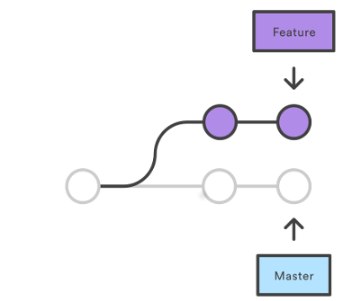
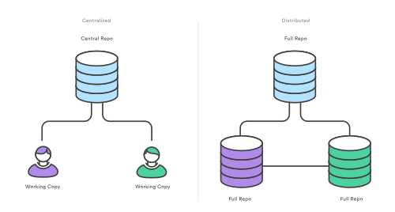
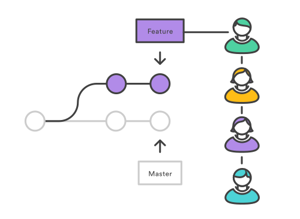

notes
Table of Contents
1 Git git
1.1 Cheatsheet
1.1.1 Basics
- git init <directory>
Create empty Git repo in specified directory. Run with no arguments to initialize the current directory as a git repository.
- git clone <repo>
Clone repo located at <repo> onto local machine. Original repo can be located on the local filesystem or on a remote machine via HTTP or SSH.
- git config user.name <name>
Define author name to be used for all commits in current repo. Devs commonly use –global flag to set config options for current user.
- git config –global user.name <name>
Define the author name to be used for all commits by the current user.
- git config –global user.email <email>
Define the author email to be used for all commits by the current user.
- git config –global alias. <alias-name> <git-command>
Create shortcut for a Git command. E.g. alias.glog log –graph –oneline will set git glog equivalent to git log –graph –oneline.
- git config –system core.editor <editor>
Set text editor used by commands for all users on the machine. <editor> arg should be the command that launches the desired editor (e.g., vi).
- git config –global –edit
Open the global configuration file in a text editor for manual editing.
- git config –global user.name <name>
- git add <directory>
Stage all changes in <directory> for the next commit. Replace <directory> with a <file> to change a specific file. To stage all changes for the next commit, git add . is appropriate command.
- git commit -m "<message>"
Commit the staged snapshot, but instead of launching a text editor, use <message> as the commit message.
- git status
List which files are staged, unstaged, and untracked.
- git log
Display the entire commit history using the default format.
- git log -<limit>
Limit number of commits by <limit>. E.g. git log -5 will limit to 5 commits.
- git log –oneline
Condense each commit to a single line.
- git log -p
Display the full diff of each commit.
- git log –stat
Include which files were altered and the relative number of lines that were added or deleted from each of them.
- git log –author="<pattern>"
Search for commits by a particular author.
- git log –grep="<pattern>"
Search for commits with a commit message that matches <pattern>.
- git log <since>..<until>
Show commits that occur between <since> and <until>. Args can be a commit ID, branch name, HEAD, or any other kind of revision reference.
- git log – <file>
Only display commits that have the specified file.
- git log –graph –decorate
–graph flag draws a text based graph of commits on left side of commit msgs. –decorate adds names of branches or tags of commits shown.
- git log -<limit>
- git diff
Show unstaged changes between your index and working directory.
1.1.2 Undoing Changes
- git revert <commit>
Create new commit that undoes all of the changes made in <commit>, then apply it to the current branch.
- git reset
Reset staging area to match most recent commit, but leave the working directory unchanged.
- git reset <file>
Remove <file> from the staging area, but leave the working directory unchanged. This unstages a file without overwriting any changes.
- git reset –hard
Reset staging area and working directory to match most recent commit and overwrites all changes in the working directory.
- git reset <commit>
Move the current branch tip backward to <commit>, reset the staging area to match, but leave the working directory alone.
- git reset –hard <commit>
Move the current branch tip backward to <commit>, reset the staging area to match, resets both the staging area & working directory to match. Deletes uncommitted changes, and all commits after <commit>.
- git reset <file>
- git clean -n
Shows which files would be removed from working directory. Use the -f flag in place of the -n flag to execute the clean.
1.1.3 Rewriting Git History
- git commit –amend
Replace the last commit with the staged changes and last commit combined. Use with nothing staged to edit the last commit’s message.
- git rebase <base>
Rebase the current branch onto <base>. <base> can be a commit ID, a branch name, a tag, or a relative reference to HEAD.
- git reflog
Show a log of changes to the local repository’s HEAD. Add –relative-date flag to show date info or –all to show all refs
1.1.4 Git Branches
- git branch
List all of the branches in your repo. Add a <branch> argument to create a new branch with the name <branch>.
- git checkout -b <branch>
Create and check out a new branch named <branch>. Drop the -b flag to checkout an existing branch.
- git merge <branch>
Merge <branch> into the current branch.
1.1.5 Remote Repositories
- git remote add <name> <url>
Create a new connection to a remote repo. After adding a remote, you can use <name> as a shortcut for <url> in other commands.
- git fetch <remote> <branch>
Fetches a specific <branch>, from the repo. Leave off <branch> to fetch all remote refs.
- git pull <remote>
Fetch the specified remote’s copy of current branch and immediately merge it into the local copy.
- git push <remote> <branch>
Push the branch to <remote>, along with necessary commits and objects. Creates named branch in the remote repo if it doesn’t exist.
- git push <remote> –force
Forces the git push even if it results in a non-fast-forward merge. Do not use the –force flag unless you’re absolutely sure you know what you’re doing.
- git push <remote> –all
Push all of your local branches to the specified remote.
- git push <remote> –tags
Tags aren’t automatically pushed when you push a branch or use the –all flag. The –tags flag sends all of your local tags to the remote repo
- git push <remote> –force
1.2 Install Git
1.2.1 Install Git on Linux
- Debian / Ubuntu (apt-get)
Git packages are available via apt:
- From your shell, install Git using apt-get:
$ sudo apt-get update $ sudo apt-get install git
- Verify the installation was successful by typing git –version:
$ git --version git version 2.9.2
- Configure your Git username and email using the following commands, replacing Emma's name with your own. These details will be associated with any commits that you create:
$ git config --global user.name "Emma Paris" $ git config --global user.email "eparis@example.com"
- From your shell, install Git using apt-get:
- TODO Arch
- Fedora (dnf/yum)
Git packages are available via both yum and dnf:
- From your shell, install Git using dnf (or yum, on older versions of Fedora):
$ sudo dnf install git
or
$ sudo yum install git
- Verify the installation was successful by typing git –version:
$git --version git version 2.9.2
- Configure your Git username and email using the following commands, replacing Emma's name with your own. These details will be associated with any commits that you create:
$ git config --global user.name "Emma Paris" $ git config --global user.email "eparis@example.com"
- From your shell, install Git using dnf (or yum, on older versions of Fedora):
- TODO Build Git from source on Linux
1.2.2 TODO Install Git on Windows
1.2.3 TODO Install Git on Mac
1.3 What is Git?
Git is a mature, actively maintained open source project originally developed in 2005 by Linus Torvalds, the famous creator of the Linux operating system kernel. Having a distributed architecture, Git is an example of DVCS (hence Distributed Version Control System). Rather than have only one single place for the full version history of the software as is common in once-popular version control systems like CVS or Subversion (also known as SVN), in Git, every developer's working copy of the code is also a repository that can contain the full history of all changes.
1.3.1 Performance
The raw performance characteristics of Git are very strong when compared to many alternatives. The algorithm implemented inside Git take advantage of deep knowledge about common attributes of real source code file trees, how they are usually modified over time and what the access patterns are. Git is not fooled by the names of the files when determining what the storage and version history of the file tree should be, instead, Git focuses on the file content itself. After all, source code files are frequently renamed, split, an rearranged. The object format of Git's repository files uses a combination of delta encoding (storing content differences), compression and explicitly stores directory contents and version metadata objects.
Being distributed enables significant performance benefits as well.
1.3.2 Security
Git has been designed with the integrity of managed source code as a top priority. The content of the files a well as the true relationships between files and directories, versions, tags and commits, all of these object in the Git repository are secured with a cryptographically secure hashing algorithm called SHA1. This protect the code and the change history against both accidental and malicious change and ensures that the history is fully traceable.
1.3.3 Flexibility
One of Git's key design objectives is flexibility. Git is flexible in several respects: in support for various kinds of nonlinear development workflows, in its efficiency in both small and large projects and in it compatibility with many existing systems and protocols.
Git has been designed to support branching and tagging as first-class citizens (unlike SVN) and operation that affect branches and tags (such as merging or reverting) are also stored as part of the change history.
1.3.4 Version control with Git
- Git is good
Git has the functionality, performance, security and flexibility that most teams and individual developer need.
- Git is de facto standard
Git is the most broadly adopted tool of its kind. Vast numbers of developers already have Git experience and a significant proportion of college graduates may have experience with only Git. In addition to the benefits of a large talent pool, the predominance of Git also means that many third party software tools and services are already integrated with Git including IDEs.
- Git is a quality open source project
Git is a very well supported open source project with over a decade of solid stewardship. Git enjoys great community support and a vast user base. Documentation is excellent and plentiful, including books, tutorial and dedicated web sites.
- Criticism of Git
One common criticism of Git is that it can be difficult to learn. Some of the terminology in Git will be novel to newcomers and for users of other systems, the Git terminology may be different, for example, revert in Git has a different meaning than in SVN or CVS. Nevertheless, Git is very capable and provides a lot of power to its users.
1.4 Concepts and Benefits
Category of software tools that help a software team manage changes of source code over time. Keeps track of every modification to the code in a special kind of database. Version control protects source code from both catastrophe and the casual degradation of human error and unintended consequences.
- A complete long-term change history of every file. This means every change made by many individuals over the years. Changes include the creation and deletion of files as well as edits to their contents.
- Branching and merging. Having team members work concurrently is a no-brainer, but even individuals working on their own can benefit from the ability to work on independent streams of changes. Creating a "branch" in VC tools keeps multiple streams of work independent from each other while also providing the facility to merge that work back together, enabling developers to verify that the changes on each branch do not conflict.
- Traceability. Being able to trace each change made to the software and connect it to project management an bug tracking software such as Jira, and being able to annotate each change with a message describing the purpose and intent of the change can help not only with root cause analysis and other forensics. Having the annotated history of the code at your fingertips when you are reading the code, trying to understand what it is doing and why it is so designed can enable developers to make correct and harmonious changes that are in accord with the intended long-term design of the system. This can be especially important for working effectively with legacy code and is crucial in enabling developers to estimate future work with an accuracy.
1.5 Git for developers
1.5.1 Feature Branch Workflow
One of the biggest advantages of Git is its branching capabilities. Unlike centralized version control systems, Git branches are cheap and easy to merge. This facilitates the feature branch workflow popular with many Git users.

Feature branches provide an isolated environment for every change to your codebase. When a developer wants to start working on something—no matter how big or small—they create a new branch. This ensures that the master branch always contains production-quality code.
Using feature branches is not only more reliable than directly editing production code, but it also provides organizational benefits. They let you represent development work at the same granularity as the your agile backlog. For example, you might implement a policy where each Jira ticket is addressed in its own feature branch.
1.5.2 Distributed Development
In SVN, each developer gets a working copy that points back to a single central repository. Git, however, is distributed version control system. Instead of a working copy, each developer gets their own local repository complete with a full history of commits.

Having a full local history makes Git fast, since it means you don’t need a network connection to create commits, inspect previous versions of a file, or perform diffs between commits.
Distributed development also makes it easier to scale your engineering team. If someone breaks the production branch in SVN, other developers can’t check in their changes until it’s fixed. With Git this kind of blocking doesn’t exist. Everybody can continue going about their business in their own local repositories.
And, similar to feature branches, distributed development creates a more reliable environment. Even if developer obliterates their own repository, they can simply clone someone else’s and start anew.
1.5.3 Pull Requests
Many source code management tools such as GitHub or Bitbucket enhance core Git functionality with pull requests. A pull request is a way to ask another developer to merge one of your branches into their repository. This not only makes it easier for project leads to keep track of changes, but also lets developers initiate discussions around their work before integrating it with the rest of the codebase.

Since they're essentially a comment thread attached to a feature branch, pull requests are extremely versatile. When a developer gets stuck with a hard problem, they can open a pull request to ask for help from the rest of the team. Alternatively, junior developers can be confident that they aren't destroying the entire project by treating pull requests as a formal code review.